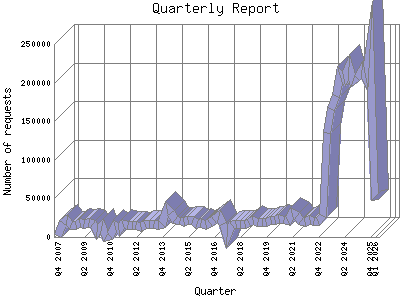

Analog 5.24
Analog 5.24 Report Magic for Analog 2.13
Report Magic for Analog 2.13The Quarterly Report shows total activity on your site for each quarter of a
year. Remember that each page hit can result in several server requests as the
images for each page are loaded.
Note: Most likely, the first and
last quarters will not represent a complete quarter's worth of data, resulting
in lower hits.

| Quarter | Number of requests | Percentage of the requests | |
|---|---|---|---|
| 1. | Q1 2026 | 48,446 | 1.44% |
| 2. | Q4 2025 | 243,216 | 7.23% |
| 3. | Q3 2025 | 205,969 | 6.13% |
| 4. | Q2 2025 | 216,126 | 6.43% |
| 5. | Q1 2025 | 205,648 | 6.12% |
| 6. | Q4 2024 | 202,145 | 6.1% |
| 7. | Q3 2024 | 220,334 | 6.56% |
| 8. | Q2 2024 | 204,456 | 6.9% |
| 9. | Q1 2024 | 209,432 | 6.23% |
| 10. | Q4 2023 | 182,268 | 5.42% |
| 11. | Q3 2023 | 165,939 | 4.93% |
| 12. | Q2 2023 | 135,306 | 4.2% |
| 13. | Q1 2023 | 27,695 | 0.82% |
| 14. | Q4 2022 | 20,307 | 0.60% |
| 15. | Q3 2022 | 20,362 | 0.60% |
| 16. | Q2 2022 | 21,795 | 0.64% |
| 17. | Q1 2022 | 19,870 | 0.60% |
| 18. | Q4 2021 | 21,154 | 0.63% |
| 19. | Q3 2021 | 26,826 | 0.80% |
| 20. | Q2 2021 | 30,675 | 0.91% |
| 21. | Q1 2021 | 20,262 | 0.60% |
| 22. | Q4 2020 | 22,199 | 0.67% |
| 23. | Q3 2020 | 23,882 | 0.71% |
| 24. | Q2 2020 | 21,656 | 0.64% |
| 25. | Q1 2020 | 21,643 | 0.64% |
| 26. | Q4 2019 | 19,098 | 0.57% |
| 27. | Q3 2019 | 19,668 | 0.59% |
| 28. | Q2 2019 | 19,827 | 0.60% |
| 29. | Q1 2019 | 21,495 | 0.64% |
| 30. | Q4 2018 | 18,129 | 0.54% |
| 31. | Q3 2018 | 17,138 | 0.51% |
| 32. | Q2 2018 | 16,928 | 0.50% |
| 33. | Q1 2018 | 16,732 | 0.50% |
| 34. | Q4 2017 | 15,937 | 0.48% |
| 35. | Q3 2017 | 0 | 0% |
| 36. | Q2 2017 | 16,831 | 0.50% |
| 37. | Q1 2017 | 27,400 | 0.81% |
| 38. | Q4 2016 | 22,114 | 0.66% |
| 39. | Q3 2016 | 17,621 | 0.52% |
| 40. | Q2 2016 | 15,878 | 0.48% |
| 41. | Q1 2016 | 17,703 | 0.52% |
| 42. | Q4 2015 | 16,575 | 0.50% |
| 43. | Q3 2015 | 22,104 | 0.66% |
| 44. | Q2 2015 | 22,485 | 0.67% |
| 45. | Q1 2015 | 19,632 | 0.59% |
| 46. | Q4 2014 | 21,142 | 0.62% |
| 47. | Q3 2014 | 22,272 | 0.67% |
| 48. | Q2 2014 | 31,453 | 0.93% |
| 49. | Q1 2014 | 35,906 | 1.7% |
| 50. | Q4 2013 | 16,436 | 0.49% |
| 51. | Q3 2013 | 15,216 | 0.46% |
| 52. | Q2 2013 | 16,545 | 0.50% |
| 53. | Q1 2013 | 16,976 | 0.50% |
| 54. | Q4 2012 | 16,578 | 0.50% |
| 55. | Q3 2012 | 12,511 | 0.38% |
| 56. | Q2 2012 | 15,816 | 0.48% |
| 57. | Q1 2012 | 15,837 | 0.48% |
| 58. | Q4 2011 | 15,444 | 0.47% |
| 59. | Q3 2011 | 17,386 | 0.51% |
| 60. | Q2 2011 | 9,395 | 0.29% |
| 61. | Q1 2011 | 14,790 | 0.44% |
| 62. | Q4 2010 | 1,603 | 0.4% |
| 63. | Q3 2010 | 0 | 0% |
| 64. | Q2 2010 | 14,047 | 0.41% |
| 65. | Q1 2010 | 6,489 | 0.20% |
| 66. | Q4 2009 | 16,350 | 0.49% |
| 67. | Q3 2009 | 18,220 | 0.54% |
| 68. | Q2 2009 | 17,115 | 0.50% |
| 69. | Q1 2009 | 18,025 | 0.53% |
| 70. | Q4 2008 | 15,905 | 0.48% |
| 71. | Q3 2008 | 15,660 | 0.47% |
| 72. | Q2 2008 | 22,448 | 0.67% |
| 73. | Q1 2008 | 17,807 | 0.53% |
| 74. | Q4 2007 | 1,700 | 0.6% |
Most active quarter Q4 2025 : 243,216 requests handled.
Quarterly average: 46666 requests handled.
This report was generated on January 22, 2026 01:58.
Report time frame December 18, 2007 17:05 to January 21, 2026 05:45.
| Web statistics report produced by: | |
| Analog 5.24 | Report Magic for Analog 2.13 |